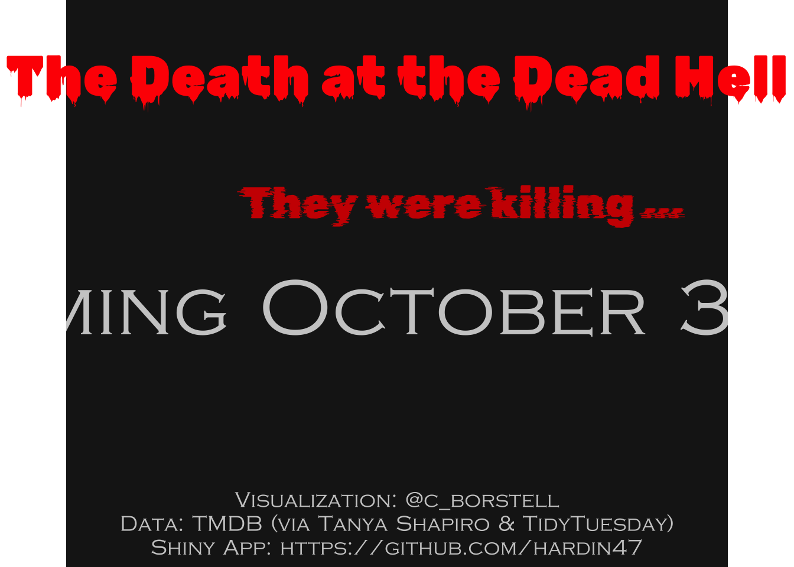

Horror Movies
Quarto + Shiny
Finally got the refresh to work!!! The Shiny App is hosted at: https://hardin47.shinyapps.io/horrormovies/
The Data
Data set was extracted from The Movie Datbase via the tmdb API using R httr.
New Movie Titles
Once again, imitation is the most sincere form of flattery. I’m building on the analysis by @c_borstell. Most of the code is taken directly from their GitHub post.
The basic idea of @c_borstell is to take the horror movie titles and break them down into their parts of speech (nouns, adjectives, adverbs, etc.). Then to create a new movie title, randomly select to put together a title which is:
The Noun1 Adposition Determiner Adjective Noun2
The sentence structure breakdown is done using the package udpipe.
Make one poster:

Movie Titles